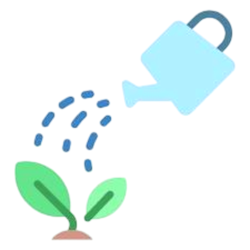

Poeny
.png)

4.5
56$
A Decorative Plant
that Prefers Humid Air
Pot

Poeny
4.5
56$
A Decorative Plant
that Prefers Humid Air
Pot

Orchids thrive when their environment mimics their natural tropical or subtropical habitats.
The Phalaenopsis (Moth Orchid) is the most common beginner choice, and the following tips largely apply to it.
 Light: Orchids require bright, indirect light. Direct midday sun will scorch their leaves, causing brown or yellow patches.
Light: Orchids require bright, indirect light. Direct midday sun will scorch their leaves, causing brown or yellow patches.
 Watering: This is where most mistakes happen. Orchids hate sitting in soggy media..
 Humidity & Temperature: They prefer higher humidity (40%–70%). Use a pebble tray filled with water beneath the pot.
Humidity & Temperature: They prefer higher humidity (40%–70%). Use a pebble tray filled with water beneath the pot.
 Potting Media & Repotting: Orchids are epiphytes and need air circulation.
Potting Media & Repotting: Orchids are epiphytes and need air circulation.
Repotting is usually needed every 1–2 years, best done immediately after flowering.
 Fertilizing: Feed your orchid regularly during its active growing season (spring/summer) usually diluted to half or quarter strength every two weeks.
Fertilizing: Feed your orchid regularly during its active growing season (spring/summer) usually diluted to half or quarter strength every two weeks.